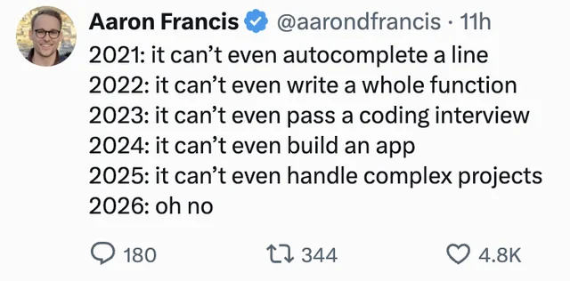

Chatbot
We wrote messages into a website and copied answers back into our work.
AI and Software Development
Model capability has crossed an important threshold
Interaction patterns moved from chat to agent loops
Manual programming is losing value; engineering is not
Vibe coding vs. agentic engineering
Verification tools become part of development
Capability Shift
The shift is not just better autocomplete. Models have moved from barely producing compilable snippets to fixing complex problems across large codebases.

Interaction Model
We wrote messages into a website and copied answers back into our work.
AI moved into the editor as a more capable form of autocomplete.
Apps and agents started owning tasks, reading code, editing files, and reporting back.
The valuable work is increasingly designing feedback loops instead of perfect prompts.
Role Shift
Typing instructions line by line is becoming less valuable as the machine gets better at producing the code itself.
Understanding systems, requirements, tradeoffs, failure modes, architecture, and verification is still valuable.
Compilers made hand-written machine code unnecessary for most work. The value moved upward: into language design, architecture, debugging, performance, and system understanding.
Engineering Discipline
Feedback Loops
Agents need a way to know whether they are right. Evaluation is not an afterthought; it is the engine that makes loops useful.
Tests, linters, screenshots, performance probes, type checks, fixtures, simulations, and production-like traces.
The engineer spends less time typing code and more time shaping the loop that proves the output is good.
My Experience
A Lua voxel game and editor stack: runtime rendering, terrain, gameplay systems, asset tooling, screenshot checks, and performance instrumentation.
Case Study
The useful prompt was not a sentence. It was a controlled loop with a scene, logs, tests, and a measurable target.
Create a repeatable test that reproduces the performance problem
Add performance logging that shows what parts take the most time during a frame
Let the agent run the test, collect output, and identify the likely hotspots
Implement targeted changes based on the measured bottlenecks
Run regression checks, then rerun the benchmark to verify the FPS gain
Final Thought
In the end, everything on a computer is represented as data. That means agents can work with more than source files: assets, rigs, animation timelines, screenshots, and review artifacts can all become part of a loop.
I used the animation and rigging system as an agentic workflow, not just as a manual editor.
The AI could create voxel assets, rig them, and animate them as linked steps in one process.
The system could export image sequences of the animation so each result could be inspected and improved.